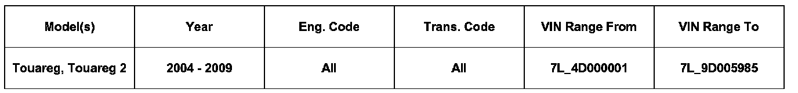
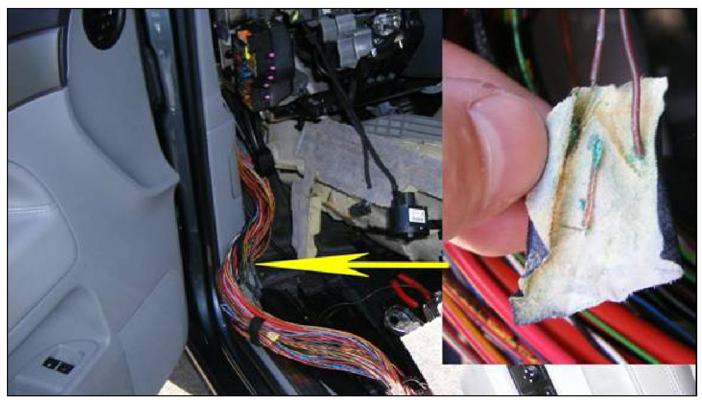

Electrical - MIL ON/No CAN Communication
97 09 02May 12, 2009
2020310 MIL ON, No CAN Communication, Shifter Lever Will Not Come Out of Park, No Start

Vehicle Information
Condition
Technical Background
The wiring harness located on the driver s side floor pan near the A-pillar may have a corroded splice(s) connection.
Production Solution
Modified splices beginning with VIN 7L_9D005986 (CW 21/08).
Service
Locate splice to determine possible corrosion. Repair wiring as per repair Information.

Warranty
Information only.
Required Parts and Tools
No Special Parts required.
No Special Tools required.
Additional Information
All part and service references provided in this Technical Bulletin are subject to change and/or removal. Always check with your Parts Dept. for the latest information.